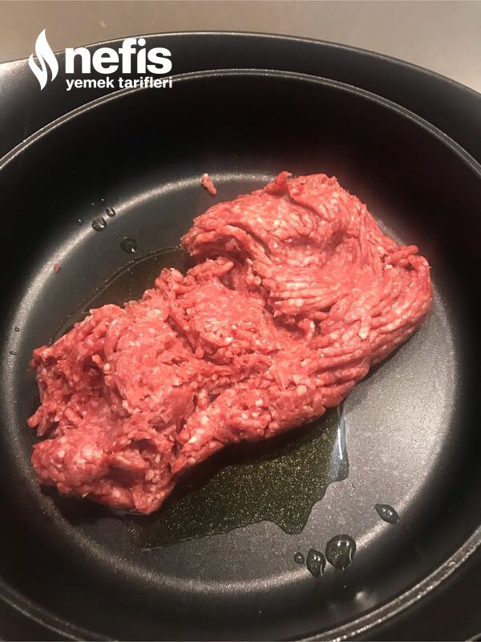

🍽️ 6-8 kişilik⏱️ Hazırlık: 20 dk🔥 Pişirme: 30 dk🏷️ Et Yemekleri
Malzemeler
- 3 tane orta boy rendelenmiş patates
- 1,5 su bardağı kadar kaşar veya tulum peyniri
- 2 tane yumurta
- 1 tutam çok ince doğranmış maydanoz
- 1 çay kaşığı karabiber
- 1 çay kaşığı toz biber
- Tuz ( peynir tuzlu ise eklemeyin)
- Fırın kağıdı
- 500 gram kıyma
- 2 orta boy soğan
- 1 tane yeşil biber
- 1 tane kapya biber
- 2-3 yemek kaşığı zeytinyağı
- 1 yemek kaşığı domates salçası
- 1 çay kaşığı karabiber
- 1 çay kaşığı toz biber
- İsteğe bağlı pulbiber
- Tuz
- 1 su bardağı sıcak su ( 200mg)
- ( isteğe bağlı rendelenmiş eriyen peynir)
- Rendelenmiş tulum ya da kaşar
- Maydanoz
Hazırlanışı
- Önce kabukları soyulmuş patatesleri rendenin kalın tarafıyla rendeleyelim ve suyunu sıkalım.
- Üzerine rendelenmiş peynir, yumurta, baharatları ve (gerekirse) tuzu ekleyelim.
- İyice karıştırıp fırın kağıdı serilmiş tepsiye iyice yayalım.
- Önceden 180 derecede ısıtılmış fırında orta derecede kızartalım.
- Bu arada iç harcını hazırlayalım:Tencereye kıymayı alıp kavurmaya başlayalım.
- Yağı ilave edelim.Soğanı küçük küçük doğrayıp ilave edelim.
- Soğanlar pembeleşince küçük doğranmış biberleri ve salçayı ekleyelim.
- Arada karıştırmaya devam edelim.
- Tuzu, baharatları ve sıcak suyu ekleyelim.
- İç harcımız suyunu çekene kadar pişirelim.
- Pişen patatesi fırından alalım.
- Hazırlamış olduğumuz kıymalı harcı üzerine eşit bir şekilde yayalım.( üzerine rendelenmiş eriyen peynir de ilave edersek çok daha lezzetli oluyor).
- Tepsinin tercihen uzun tarafından rulo yapalım.
- Ruloyu tepsinin ortalarına alıp üzerine peynir serpelim.
- Peynir eriyene kadar 180 derece fırında biraz pişirelim.
- Son olarak isteğe bağlı üzerini ince kıyılmış maydanoz, biber veya domates ile süsleyelim.
- Biraz dinlendirip dilimleyerek sıcak sıcak servis yapalım.